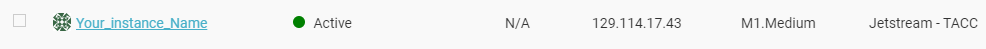

Installing SOMOSPIE on XSEDE virtual Machine
To get started with SOMOSPIE Engine on an XSEDE virtual machine, make sure you meet the prerequisites, then clone SOMOSPIE.
Prerequisites
Set a XSEDE virtual machine
- Launch the following XSEDE UBUNTU image.
-
Click on Launch

-
You can leave the default values in "Basic Info" section, but make sure to select m1.medium (CPU:6, Mem: 16 GB, Disk: 60GB) on "Instance Size"

- Click on Launch Instance
- Wait until the status of your virtual machine is Active with a green dot
-
You are ready to clone and run SOMOSPIE

Cloning and running SOMOSPIE
-
Clone SOMOSPIE
username@js-169-84:~$git clone --recursive https://github.com/TauferLab/SOMOSPIE
-
To continue setup, we need to activate the anaconda evironment that will be used for SOMOSPIE.ipynb. On Jetstream, use the built-in "ez" method:
username@js-169-84:~$ezj
- Once you see URL for accessing Jupyter Notebook, return to the command-line: force exit by pressing Ctrl+C twice.
-
The final setup step is simple:
username@js-169-84:~$make bash
-
You are now ready to start using SOMOSPIE! Launch Jupyter Notebooks with ezj, click the link provided, and open SOMOSPIE.ipynb.
username@js-169-84:~$ezj